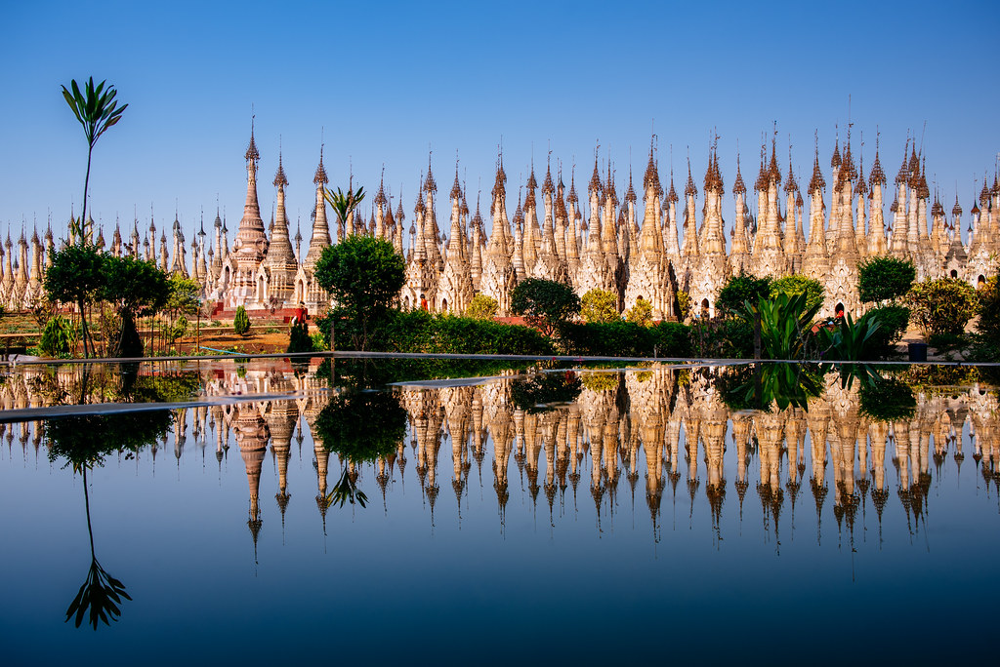
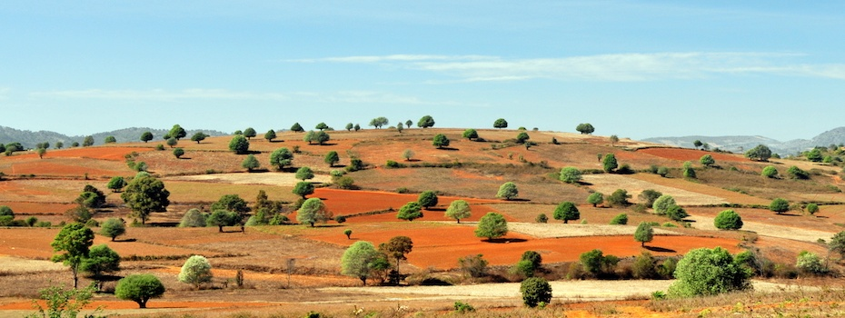

Kakku Pagodas
Kakku Pagodas, located in the Shan State of Myanmar, is a stunning archaeological site that showcases the rich cultural and historical heritage of the region. Nestled in a remote area, Kakku features over 2,500 ancient stupas, many adorned with intricate carvings and beautiful designs, dating back to the 12th century.

Kalaw
Kalaw is a charming hill station located in the Shan State of Myanmar, renowned for its cool climate, stunning landscapes, and rich cultural heritage. Nestled at an elevation of approximately 1,300 meters, Kalaw offers a refreshing escape from the heat of the lowlands and is surrounded by rolling hills, lush pine forests, and scenic tea plantations.